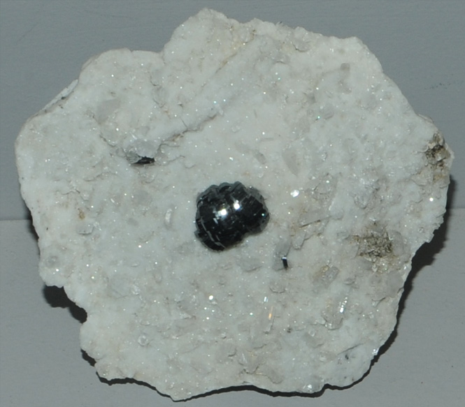

|

| FeTiO3
This sample of ilmenite is displayed in the Smithsonian Museum of Natural History. Ilmenite is an oxide mineral of titanium and iron with the composition FeTiO3 . This sample is about 6x5 cm with the crystal about 1 cm. It is from Bagicha, Tormiq, Baltistan, Northern Areas, Pakistan. It is described as ilmenite with albite.
|